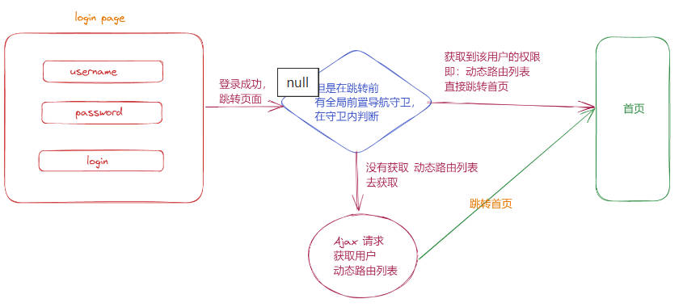
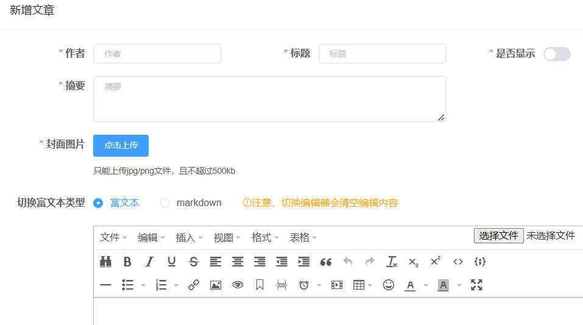
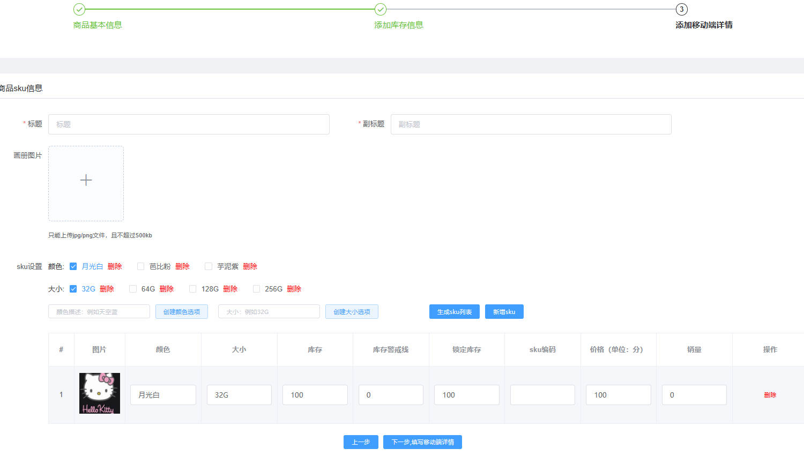
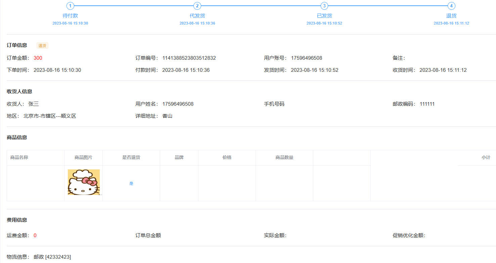

基于element-admin-template的家居类后台管理系统项目总结
基于element-admin-template的家居类后台管理系统项目总结
nancy Jane项目介绍
本项目是一个基于element-admin-template实现的一套乐居客户端的后台管理系统。后台管理系统包含大屏展示、权限管理、商品管理、订单管理、用户管理、营销管理、内容管理等模块。
项目目录
src文件夹下的目录如下：
dashboard -数据大屏
- components -插件
- mapEchart - 地图
- orderBar -柱形图
- pieEchart -饼图
- wordEchart -词云图
- index -数据大屏首页
- components -插件
权限管理
content -内容管理
- article -文章列表
- detail -文章详情
- index -文章列表主页
- material -素材管理
- index -素材列表主页
- article -文章列表
order -订单管理
- orders -订单列表
- index -订单列表主页
- orderDetail -订单详情
- orderBack -退单列表
- index -退单列表主页
- orderBackDetail -退单详情
- address -地址管理
- index -地址列表主页
- orders -订单列表
product -商品管理
- productList -商品列表
- index -商品列表主页
- productDetail -商品详情
- productCate -商品分类
- index -商品分类主页
- productBrand -品牌管理
- index -品牌管理主页
- productList -商品列表
需求实现
介绍
auth页
权限管理页可分为三个部分，账号角色和权限。超级管理员账号拥有权限管理和其他所有列表管理，可为其他成员设置管理权限。管理权限包括菜单权限和按钮权限，菜单权限有商品列表，订单列表等；按钮权限包括查看，增加，编辑，删除。
实现思路：前端有一份动态路由表，等到用户登录拿到用户的角色之后根据当前登录用户的角色去筛选出可以访问的路由，形成一份定制路由表，然后动态挂载路由。这样做的好处就是，前端每开发一个页面不需要让后端再去配一下路由和权限了。
项目中管理员是可以添加角色的，包括给角色分配权限，然后给用户分配角色。然而，路由表又是跟角色挂钩。考虑一种情况，项目上线之后，管理员添加了一个新角色，并且要给这个角色分配菜单。
路由表中的constantRoutes包含登录页和404错误页，其他列表存储在动态路由表中。获取动态路由表数据步骤如下
前端获取到路由表数据后，需要进行格式化，再挂载路由
dashbord页
主页数据大屏实现的功能有数字增长，词云图，柱状图，地图，饼图等。借助echarts实现
content页
content页包含文章管理和素材管理。在文章管理页面，需要实现条件查询，显示文章列表，新增文章，分页器。
显示文章列表；调获取文章的接口，发送getArticle请求，传入pagination的参数start和limit，获取文章列表数据渲染在页面上
条件查询；根据input输入框的内容，点击搜索时，设置参数start为1后再次发送请求渲染文章；点击重置时，数据清空，使用this.$options重置初始值，再设置start为1，发送请求
分页器；传入，每次页码变化都需要设置start为1，limit为当前val值后发送请求；当前页变化设置start为当前val
新增文章；点击新增跳转至文章详情页，填写文章基本信息，导入富文本插件书写文章描述信息；为表单数据添加校验规则
编辑文章；点击编辑跳转至文章详情页，根据是否传入id值来判断是编辑还是新增；编辑时根据id获取数据显示在页面上然后编辑
素材列表；素材页包含上传素材图片，然后数据回显在页面上
product页
product商品页包含商品列表，分类，品牌列表。商品列表页需要实现的功能有条件查询，商品列表展示，新增商品，编辑商品，导出为Excel文件。
（1）productList商品列表
商品列表展示；进页面时调接口查询所有商品数据
新增商品；点击新增，跳转到productDetail商品详情页面。productDetail页需要根据步骤条填写信息。步骤条有三步。三部分在一个form表单中，根据step变量控制显示和隐藏。
第二步添加库存信息；上传图册成功时，往albumPics数组中push图片路径。移除图册照片时，需要删除albumPics中的图片路径和该图册的uploadFiles文件中的数据
创建sku数据；在input框中输入数据，点击生成sku，判断是否有重复值，并将数据push到skulist中。
生成sku列表；通过两个嵌套for循环，将“颜色”和“大小”数据push到sku列表中并生成sku表格
表单校验时选择validateField校验部分字段，校验通过后才能继续“下一步”。
三步都填写完毕后，提交保存数据；提交前数据需要进行规整，例如规整skuList时，把skulist的每个item数组push到临时的skulist中，最后再赋值回去。
1
2
3
4
5
6
7
8
9
10
11
12
13
14
15
16
17
18
19
20
21
22
23
24// 规整skuList
const tempSkuList = []
this.pmsSkuStockList.forEach(item => {
// 把skulist的每个item数组push到临时的skulist中，最后再赋值回去
tempSkuList.push({
...item,
// spData: [{"key":"颜色","value":"蓝色"},{"key":"容量","value":"32G"}]
spData: JSON.stringify([
{
key: '颜色',
value: item.color
},
{
key: '容量',
value: item.size
}
])// sku属性，json格式String类型 ,
})
console.log('解构赋值后的tempSkuList', tempSkuList)
})
console.log('tempSkuList', tempSkuList)
this.pmsSkuStockList = tempSkuList
order页
- 编辑商品；和文章列表相似，根据是否传入id值来判断是新增还是编辑。点击编辑时，跳转至商品详情页，根据传入的id值调接口获取数据显示在页面上
(2)productCate商品分类
- 商品分类页展示了分类数据。调接口获取到商品分类数据后，将lejuCateList数据处理成带有children数组的数据，便于表格树形数据的展示。
(3)productBrand品牌管理
- 调品牌管理的接口展示数据
order页
order页包含orders订单列表，orderBack退单列表，address地址管理。
（1）orders
orders订单列表页实现的功能有条件查询，展示订单数据，查看订单信息。
展示订单数据；调接口查询订单列表回显数据
查看订单信息；点击查看订单，跳转到orderDetail页并传递id。根据id值获取订单信息并回显在页面上。
根据订单不同的状态显示对应的信息和步骤条的状态。

(2)orderBack；
orderBack实现的功能有展示退货订单的数据，查看退货订单详情。退货订单的状态有“待处理”，“退货中”，“已拒绝”，“已完成”。
- orderBackDetail中，“待处理”的订单展示待处理的按钮，点击同意退款后订单状态变为“退货中”，点击拒绝退款后变为“已拒绝”
- 状态为“退货中”和“已拒绝”的订单显示“处理结果”相关信息，包含处理人和备注。
- 状态为“已完成”的订单显示“收货信息”的信息
(3)address
address页面实现的功能有展示地址列表，新增，编辑，删除地址，默认地址显示一个。
- 新增地址时显示一个dialog对话框，输入地址数据后调接口发送请求，新增地址
- 编辑地址时根据传入的id获取数据，会先在对话框内
- 点击删除地址，调接口删除数据
- 展示默认地址；默认地址与其他地址数据互斥。。。。。